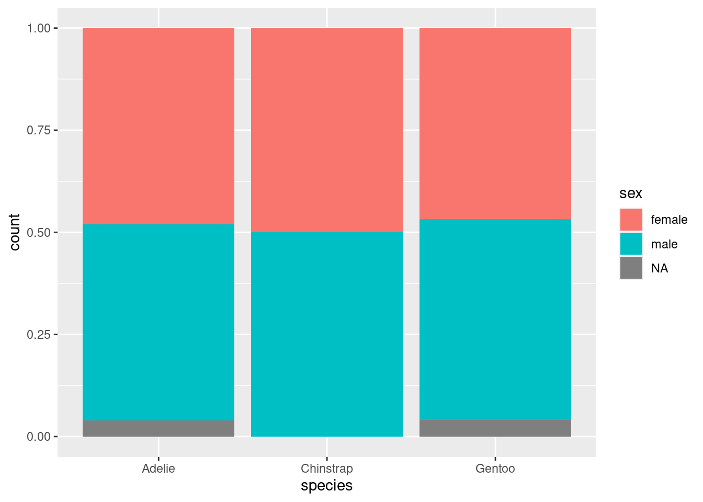
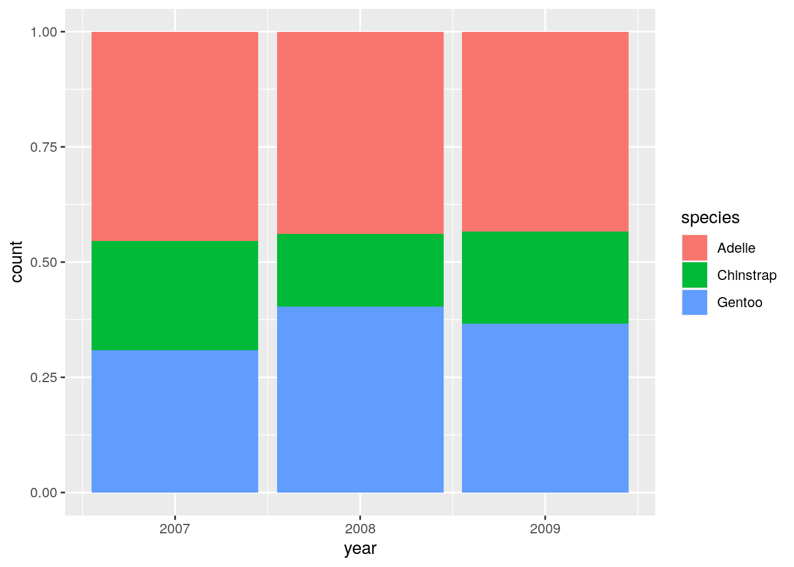
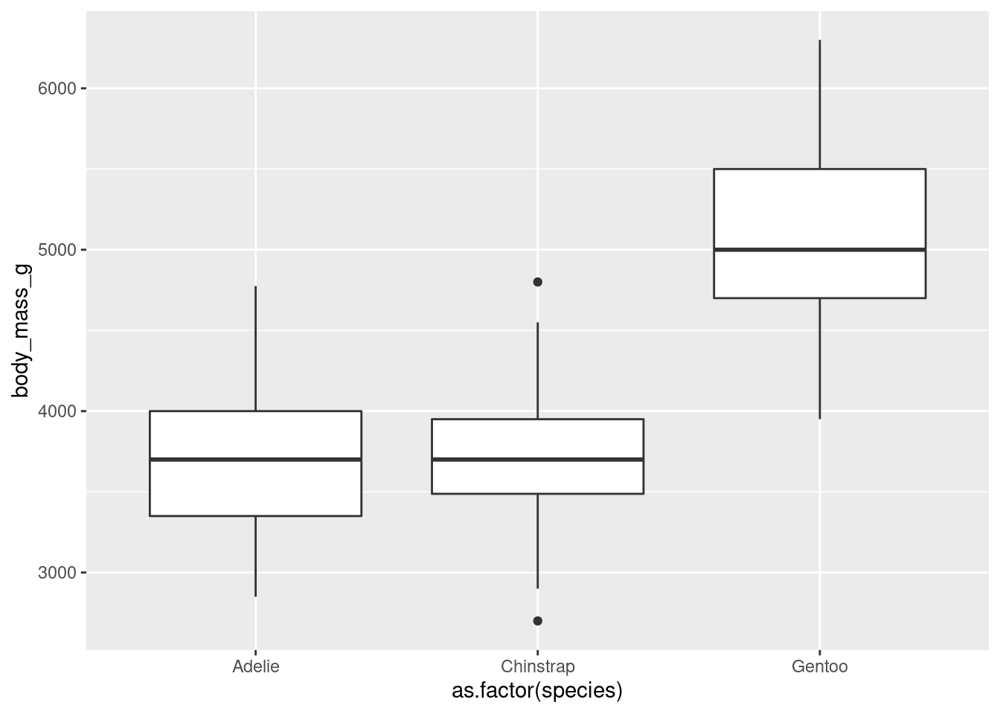

Lecture 3 Fundamentals of probability
3.1 Sample spaces and random variables
No observation or measurement in our world is perfectly reproducible, no matter how carefully planned and executed. The level of uncertainly varies, but randomness always finds a way to creep into a data set. Where does the “random” factor come from? From the classical physics perspective, as articulated by Laplace, most natural phenomena are theoretically deterministic for an omniscient being with an unlimited computational power. Quantum mechanical phenomena are (theoretically) truly random, but the randomness is not observable on the scales of biology or social science. The lack of predictability in the data we work with is usually due either to its intrinsic complexity (e.g., biomolecular systems, prediction of animal behavior), which essentially makes it impossible to know every detail of the system, or to some external source of noise (e.g., measurement error, weather affecting food availability) that is outside of our control.
In probability terminology, a random experiment produces outcomes and the collection of all outcomes of an experiment is called its sample space.
Example: The specifics of the experiment can affect the degree of uncertainty in the outcome; the same measurement may be random or not, depending on context. For example, measuring the height of a person should be deterministic, if one measures the height of the same person within a short amount of time. So unless you’re interested in studying the error in stadiometer results, you probably won’t consider this a random experiment. However, measuring the heights of different people is a random experiment, where the source of randomness is primarily due to the selection of people for your study, called sampling error, rather than due to the measurement noise of any one person.
The measurement of interest from a random experiment is called a random variable. Sometimes the measurement is simply the outcome, but usually it reports some aspect of the outcome and so several outcomes can have the same value of the random variable. The random variable can then be seen as condensing the sample space into a smaller range of values. Random variables can be numeric or categorical, with the difference that categorical variables cannot be assigned meaningful numbers. For instance, one may report an individual by phenotype (e.g., white or purple flowers), or having a nucleotide A, T, G, C in a particular position, and although one could assign numbers to these categories (e.g., 1, 2, 3, 4) they could not be used in sensical way—one can compare and do arithmetic with numbers, but A is not less than T and A + T does not equal G. Thus there are different tools for describing and working with numeric and categorical random variables.
Example: In a DNA sequence a codon triplet represents a specific amino acid, but there is redundancy (several triplets may code for the same amino acid). One may think of a coding DNA sequence as an outcome, but the amino acid (sequence or single one) as a random variable. Extending this framework, one may think of genotype as an outcome, but a phenotype (e.g., eye color) as a random variable—although this is not correct for any phenotype that is not strictly determined by the genotype, because then there are other factors (e.g., environmental or epigenetic) that influence the value of the random variable besides the outcome (genotype).
Exercise: The package palmerpenguins contains multiple variables measured in populations of three different species of penguins over three years on three different islands. Identify numeric and categorical variables, and specify whether numeric variables are discrete and continuous.
## tibble [344 × 8] (S3: tbl_df/tbl/data.frame)
## $ species : Factor w/ 3 levels "Adelie","Chinstrap",..: 1 1 1 1 1 1 1 1 1 1 ...
## $ island : Factor w/ 3 levels "Biscoe","Dream",..: 3 3 3 3 3 3 3 3 3 3 ...
## $ bill_length_mm : num [1:344] 39.1 39.5 40.3 NA 36.7 39.3 38.9 39.2 34.1 42 ...
## $ bill_depth_mm : num [1:344] 18.7 17.4 18 NA 19.3 20.6 17.8 19.6 18.1 20.2 ...
## $ flipper_length_mm: int [1:344] 181 186 195 NA 193 190 181 195 193 190 ...
## $ body_mass_g : int [1:344] 3750 3800 3250 NA 3450 3650 3625 4675 3475 4250 ...
## $ sex : Factor w/ 2 levels "female","male": 2 1 1 NA 1 2 1 2 NA NA ...
## $ year : int [1:344] 2007 2007 2007 2007 2007 2007 2007 2007 2007 2007 ...3.2 Probability axioms
An outcome in sample space can be assigned a probability depending on its frequency of occurrence out of many trials, each is a number between 0 and 1. Combinations of outcomes (events) can be assigned probabilities by building them out of individual outcomes. These probabilities have a few rules, called the axioms of probability, expressed using set theory notation.
The total probability of all outcomes in sample space is 1. \(P(\Omega) = 1\)
The probability of nothing (empty set) is 0. \(P(\emptyset) = 0\)
The probability of an event made up of the union of two events is the sum of the two probabilities minus the probability of the overlap (intersection.) \(P(A \cup B) = P(A) + P(B) - P(A \cap B)\)
Example: Let’s assign a probability to every possible three-letter codon. There are \(4^3 = 64\) codons, so if one assumes that each one has equal probability, then they they all equal \(1/64\) (by axiom 1.) The probability of a codon having A as the first letter is 1/4, and so is the probability of A as the second letter. Axiom 3 allows us to calculate the probability of A in either the first or the second letter:
\[ P(AXX \cup \ XAX ) = P(AXX) + P(XAX) - P(AAX) = 1/4 + 1/4 - 1/16 = 7/16\]
3.3 Probability distributions
The probability of each value of a random variable can be calculated from the probability of the event that corresponds to each value of the random variable. The collection of the probabilities of all of the values of the random variable is called the probability distribution function of the random variable, more formally the mass function for a discrete random variable or the density function for a continuous random variable.
For a discrete random variable (let’s call it \(X\)) with a probability mass function \(f\), the probability of \(X\) taking the value of \(a\) can be written either as \(f(X=a)\) or \(f(a)\), as long as it’s clear that \(f\) is the probability distribution function of \(X\). The one ironclad rule of probability is that all values of the mass function have to add up to 1. To state this mathematically, if all the possible values of \(X\) can be written as \(a_1, a_2, ...\) (there may be finitely or infinitely many of them, as long as it’s a countable infinity), this sum has to be equal to 1: \[ \sum_i f(a_i) = 1 \]
A continuous random variable (let’s call it \(Y\)) with a probability density function \(g\) is a bit more complicated. The continous part means that the random variable has uncountably many values, even if the range is finite (for example, there are uncountably many real numbers between 0 and 1). Thus, the probability of any single value must be vanishingly small (zero), otherwise it would be impossible to add up (integrate) all of the values and get a finite result (let alone 1). We can only measure the probability of a range of values of \(Y\) and it is defined by the integral of the density function overal that range:
\[ P( a< Y < b) = \int_a ^b g(y) dy \]
The total probability over the entire range of \(Y\) has to be 1, but it’s similarly calculated by integration instead of summation (\(R\) represents the range of values of \(Y\)):
\[ \int_R g(y) dy = 1\]
Example: As codons (DNA triplets) code for amino acids, we can consider the genetic code a random variable on the sample space. Assuming all codons have equal probabilities, the probability of each amino acid is the number of triplets that code for it divided by 64. For example, the probabilities of leucine and arginine are \(6/64 = 3/32\), the probability of threonine is \(4/64 = 1/16\) and the probabilities of methionine and tryptophan are \(1/64\). This defines a probability distribution function of the random variable of the genetic code. Note that the sum of all the probabilites of amino acids has to be 1. Of course there is no inherent reason why each triplet should be equally probable, so a different probability structure on the sample space would result in a different probability distribution (mass) function.
3.4 Measures of center: medians and means
The standard measures described here are applicable only numeric random variables. Some measures of center and spread for categorical variables exist as well.
The median of a random variable is the value which is in the middle of the distribution, specifically, that the probability of the random variable being no greater than that value is 0.5.
The mean or expectation of a random variable is the center of mass of the probability distribution. Specifically, it is defined for a mass function to be:
\[ E(X) = \sum_i a_i\, f(a_i)\]
And for a density function it is defined using the integral: \[ E(Y) = \int_R y\, g(y) dy \]
Example: Let us examine the factors (categorical variables) in the penguins data set. They cannot be described using means and medians, but can be plotted by counts in each category as you learned in the introduction to ggplot2:


One can plot the distributions of numeric variables like body mass for different penguin species using box plots:
## Warning: Removed 2 rows containing non-finite values (stat_boxplot).
The following code chunk uses dplyr functions that we will learn in the next chapter to calculate the mean and median values of these variables aggregated by species:
## # A tibble: 3 x 2
## species mean
## <fct> <dbl>
## 1 Adelie 3706.
## 2 Chinstrap 3733.
## 3 Gentoo 5092.## # A tibble: 3 x 2
## species median
## <fct> <dbl>
## 1 Adelie 3700
## 2 Chinstrap 3700
## 3 Gentoo 5050Comment on how the descriptive statistics correspond to the box plots.
3.5 Measures of spread: quartiles and variances
All random variables have spread in their values. The simplest way to describe it is by stating its range (the interval between the minimum and maximum values) and the quartiles (the medians of the two halves of the distribution).
A more standard measure of the spread of a distribution is the variance, defined as the expected value of the squared differences from the mean:
\[\text{Var}(X) = E [X - E(X)]^2 = \sum_i (a_i- E(X))^2 f(a_i)\]
And for a density function it is defined using the integral: \[\text{Var}(Y) = E[ Y - E(Y)]^2 = \int_R (y-E(Y))^2 g(y) dy \]
Variances have squared units so they are not directly comparable to the values of the random variable. Taking the square root of the variance converts it into the same units and is called the standard deviation of the distribution: \[ \sigma_X = \sqrt{\text{Var}(X)}\] Example: Let’s go back to the penguins data set and calculate the measures of spread for the variable body mass for different penguin species
## Warning: Removed 2 rows containing non-finite values (stat_boxplot).
## # A tibble: 3 x 2
## species var
## <fct> <dbl>
## 1 Adelie 210332.
## 2 Chinstrap 147713.
## 3 Gentoo 251478.penguins %>% drop_na() %>% group_by(species) %>% summarise(first_quart = quantile(body_mass_g,0.25))## # A tibble: 3 x 2
## species first_quart
## <fct> <dbl>
## 1 Adelie 3362.
## 2 Chinstrap 3488.
## 3 Gentoo 4700penguins %>% drop_na() %>% group_by(species) %>% summarise(third_quart = quantile(body_mass_g,0.75))## # A tibble: 3 x 2
## species third_quart
## <fct> <dbl>
## 1 Adelie 4000
## 2 Chinstrap 3950
## 3 Gentoo 5500Which species has a wider spread in its body mass? How do the descriptive stats and the box plots correspond?
3.6 Data as samples from distributions: statistics
In scientific practice, we collect data from one or more random variables, called a sample, and then try to make sense of it. One of the basic goals is statistical inference: using the data set to describe the population distribution from which the sample was drawn. Data sets can be plotted as histograms and the frequency/fraction of each value should be an approximation of the underlying probability distribution. In addition, descriptive statistics of the sample data (means, variances, medians, etc.) can be used to estimate the true parameters such as the mean and the variance of the population distribution.
Some of the fundamental questions about the population include:
What type of distribution is it?
Estimate the parameters of that distribution.
Test a hypothesis, e.g., whether two samples were drawn from the same distribution.
Describe and test a relationship between two or more variables.
3.6.1 Law of large numbers
First, the sample has to be unbiased, that is, no outcomes should be systematically over- or under-represented. But even an unbiased sample will differ from the population due to the inherent randomness of selection (sampling error). The law of large numbers states that as the sample size increases, the mean of the sample converges to the true mean of the population. Formally, for a set of \(n\) indepdenent, identically distributed random variables (the sample) \(\{X_i\}\) the sample mean \(\overline{X}_n\) converges to the mean of the distribution \(\mu\):
\[ \lim _{n \to \infty} \frac{\sum_{i=1}^n {X_i}}{n} = \lim _{n \to \infty} \overline{X}_n = \mu \]
3.6.2 Central Limit Theorem
That is nice to know, but doesn’t say exactly how large a sample is needed to estimate, for example, the mean of the population to a given precision. For that, we have the Central Limit Theorem, which states that the distribution of sample means (from samples of independent, identically distributed random variables) as sample size increases, approaches the normal (Gaussian) distribution with mean equal to the population mean and standard deviation equal to the standard deviation of the population divided by the square root of the sample size. Formally, it states that for a set of \(n\) indepdenent, identically distributed random variables (the sample) \(\{X_i\}\) with distribution mean \(\mu\) and variance \(\sigma^2\), the probability density function of the sample mean \(\overline{X}_n\) converges for large sample size \(n\) to the normal distribution:
\[ P(\overline{X}_n) \to N(\mu, \sigma^2/n) \]
where \(N(\mu, \sigma^2/n\)) stands for the normal distribution with mean \(\mu\) and variance \(\sigma^2/n\). One extremely useful consequence of this theorem is that the variance of the sample mean is reciprocally related to the sample size \(n\). More precicely, it allows the calculation of confidence intervals by using the normal distribution to generate an interval around the observed sample mean in which the true mean \(\mu\) lies with a given likelihood.
This is an amazing result because it applies to any distribution, so it allows for the estimation of means for any situation, as long as the condition of independent, identically disributed variables in the sample is satisfied (the identical distributed condition can actually be relaxed). There are other central limit theorems that apply to other situations, including cases where the random variables in the sample are not independent (e.g., Markov models). The bottom line is that an unbiased sample contains a reflection of the true population, but it is always distorted by uncertainty. Larger sample sizes decrease the uncertainty but are more difficult and expensive to obtain.
Discussion: Suggest examples of biological data sets which are not made up of independent identically distributed random variables.
3.7 Exploration: misleading means
Means are the most common type of descriptive statistic and are sometimes the only numeric quantity used to compare two data sets, e.g. “the average GPA at school A is 3.5 vs 3.8 at school B”. However, means can be misleading measures in multiple ways.
First, means are highly sensitive to outliers, or points that are very different from other values. They can skew the mean value, even pulling it completely away from the bulk of the values, in which case the mean ceases to be a measure of a “typical” value.
Second, there can be funny business with combining means of different subsets of data. Normally, you might expect if you have group A and group B, and each group has two subgroups divided by another variable (e.g. we are comparing the GPAs of students in school A and school B, and we split up the students in each school by gender), then if the means of each subgroup of A and larger than the means of the same subgroup of B (e.g. the GPA of girls and boys in school A are higher than those of their counterparts in school B), then the same relationship should be true for the combined mean of group A and group B (that is, the overall GPA in school A is higher than school B). That is not necessarily true!
This apparent contradiction is called Simpson’s paradox. It can be illustrated in the data set of all the passengers and crew on the doomed ocean liner Titanic. The data set is found in the library stablelearner and is loaded by the chunk below:
## 'data.frame': 2207 obs. of 11 variables:
## $ name : chr "Abbing, Mr. Anthony" "Abbott, Mr. Eugene Joseph" "Abbott, Mr. Rossmore Edward" "Abbott, Mrs. Rhoda Mary 'Rosa'" ...
## $ gender : Factor w/ 2 levels "female","male": 2 2 2 1 1 2 2 1 2 2 ...
## $ age : num 42 13 16 39 16 25 30 28 27 20 ...
## $ class : Factor w/ 7 levels "1st","2nd","3rd",..: 3 3 3 3 3 3 2 2 3 3 ...
## $ embarked: Factor w/ 4 levels "B","C","Q","S": 4 4 4 4 4 4 2 2 2 4 ...
## $ country : Factor w/ 48 levels "Argentina","Australia",..: 44 44 44 15 30 44 17 17 26 16 ...
## $ ticketno: int 5547 2673 2673 2673 348125 348122 3381 3381 2699 3101284 ...
## $ fare : num 7.11 20.05 20.05 20.05 7.13 ...
## $ sibsp : Ord.factor w/ 9 levels "0"<"1"<"2"<"3"<..: 1 1 2 2 1 1 2 2 1 1 ...
## $ parch : Ord.factor w/ 10 levels "0"<"1"<"2"<"3"<..: 1 3 2 2 1 1 1 1 1 1 ...
## $ survived: Factor w/ 2 levels "no","yes": 1 1 1 2 2 2 1 2 2 2 ...The chunk below calculated the survival probability of passengers of all classes compared to the crew (of all types:
titanic %>% group_by(Passenger = class %in% c('1st', '2nd', '3rd'), survived) %>% summarise(num = n()) %>% mutate(fraction = num/sum(num)) ## # A tibble: 4 x 4
## # Groups: Passenger [2]
## Passenger survived num fraction
## <lgl> <fct> <int> <dbl>
## 1 FALSE no 679 0.763
## 2 FALSE yes 211 0.237
## 3 TRUE no 817 0.620
## 4 TRUE yes 500 0.380You can see that about 24% of the crew survived and almost 38% of the passengers survived. In this week’s assignment you will calculate and explain what happens when you divide the people in each group by gender.